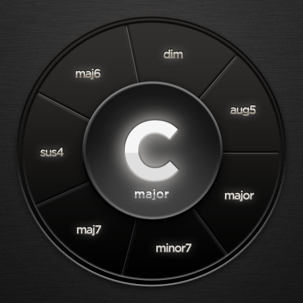

Award-Winning · Apple Staff Favorite
Polychord
Songwriting at your fingertips.
The musical instrument for everyone
Released as one of the original top-ten music apps for iPad over fifteen years ago, Polychord has been used by musicians all around the world. Whether you're a complete novice and just want to explore chords, or a songwriting expert looking for a way to break out of a groove — Polychord has something for everyone.
Play chords from a wide variety of palettes. Strum and solo with ease — everything is in key. Turn on auto-accompany, and a whole band is at your command. Want to dive deeper? Extensive MIDI options let you control your favorite DAW like GarageBand or Logic.
Chord Palettes
Major, minor, jazz, cinematic, rock — explore new musical territory. The chord circles set the tone for the rest of the app, with the strum keys and auto-accompaniment following in harmony.
Auto-Accompany
A whole band at your command with customizable drum synth, a variety of rhythm and bass lines, and an extensive arpeggiator that can play the notes of the chord or a whole catalogue of scales and time signatures.
MIDI Control
Use Polychord to play virtual instruments in your favorite DAW. Turn solos on the strum keys into a grand piano in GarageBand. Split chords into multiple channels to control a whole quartet in Logic Pro.
Projects & Export
Record, organize, and share your songs via AirDrop or Files
"An inspiring way to create music."— Engadget
Apple Staff Favorite
Available Now
Rediscover the joy of play
Polychord for iPad. Now better than ever.